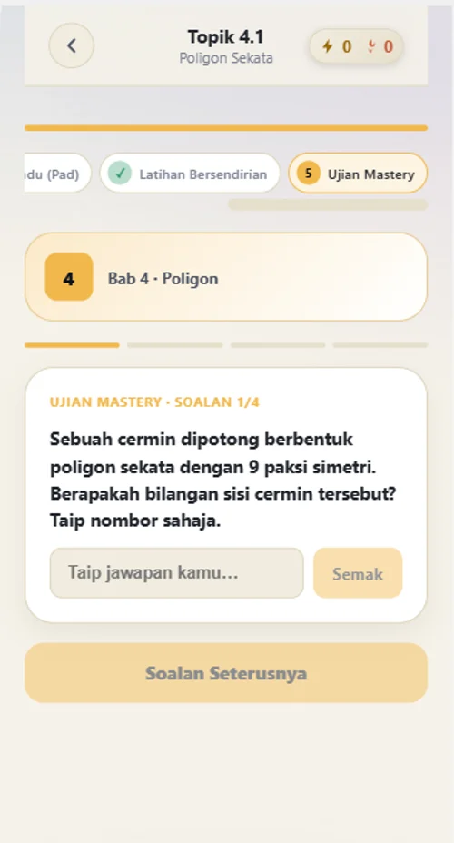
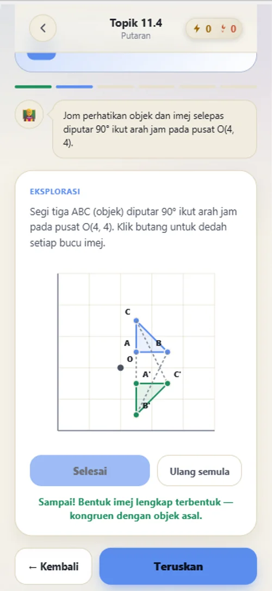
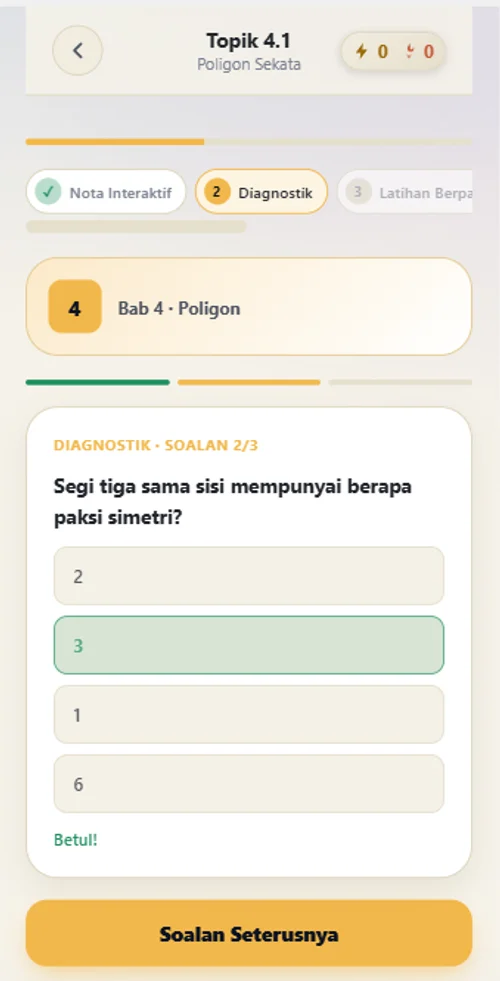
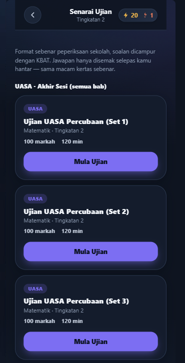
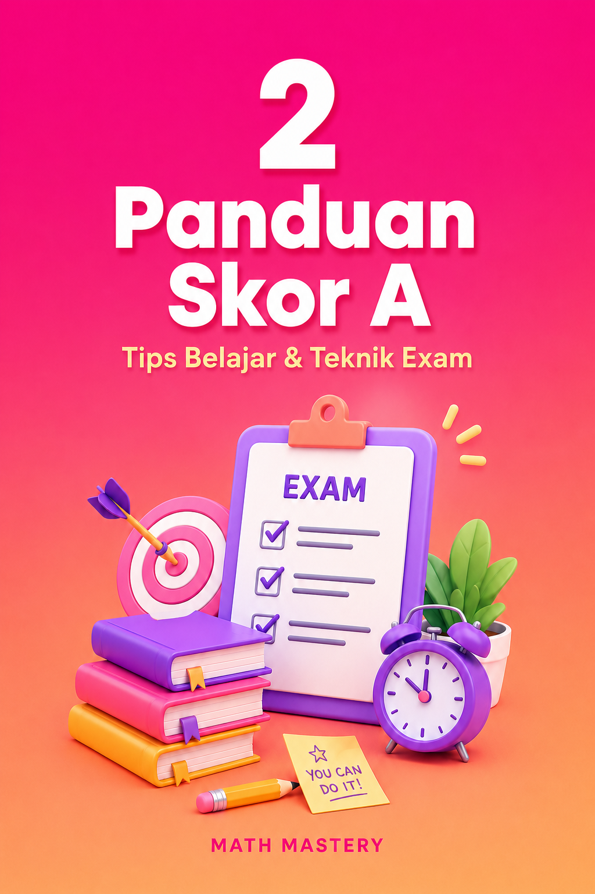
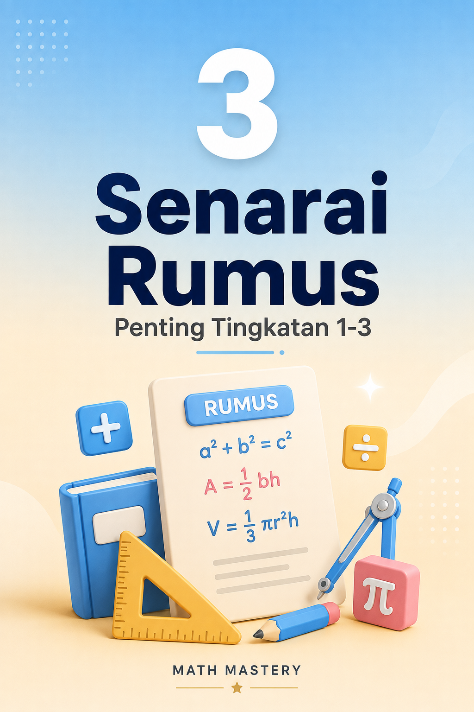

{kind=link}
{kind=link}
{kind=link}
{kind=link}
Mudah digunakan.
Seronok mencuba app dan mudah menggunakannya.
MATEMATIK KSSM · TINGKATAN 1, 2 & 3
Bantu anak faham cara menjawab,
satu langkah demi satu langkah.
Buka nota, cuba latihan dan rujuk bantuan bila tersekat — terus di telefon anak.
LIHAT PAKEJ & HARGASekali bayar • Tiada yuran bulanan • 3 Tingkatan
Tawaran RM39 terhad sehingga 30 September 2026, 11:59 malam (waktu Malaysia).


Paparan sebenar aplikasi Math Mastery. Tekan gambar untuk besarkan.
Tengok apa yang anak akan gunaBila soalan berubah, anak tak tahu nak mula di mana. Latihan Berpandu membantu anak cuba satu langkah dahulu, kemudian semak jawapannya.
LIHAT CONTOH SEBENAR DALAM APP
Tekan screenshot untuk lihat dengan lebih jelas.
Buka semula nota dan latihan bab lama dalam Tingkatan 1–3.
Anak boleh rujuk nota dan bantuan dahulu. Semak kemajuannya bersama pada peranti anak.
Baca nota, cuba dengan bantuan, kemudian jawab sendiri. Lihat paparan sebenar aplikasi di bawah.
Terokai konsep dengan visual dan contoh sebelum menjawab soalan.
Satu langkah pada satu masa. Buka bantuan apabila anak tersekat.

Uji sama ada anak boleh menjawab tanpa bantuan.

Capai sekurang-kurangnya 85% untuk status topik dikuasai.

Cari bab yang diperlukan dan sambung ulang kaji.

Semak topik yang dikuasai bersama anak pada peranti yang digunakan.

Nampak dari mana pengiraan kecerunan datang.

Lihat kedudukan objek dan imej pada grid.

Semak asas topik sebelum masuk ke latihan penuh.
PERSEDIAAN PEPERIKSAAN JUGA ADA
Selain latihan mengikut topik, anak boleh mencuba ujian percubaan UASA dan UPSA dalam aplikasi.
Contoh paparan: senarai ujian UASA Tingkatan 2. Set latihan dalam aplikasi, bukan kertas peperiksaan rasmi.

Akses penuh Tingkatan 1, 2 & 3. Satu bayaran sahaja.
Untuk anak yang:
Aplikasi ulang kaji kendiri. Mulakan dengan satu topik, baca nota dan cuba latihan mengikut rentak anak.
DARIPADA MEREKA YANG SUDAH MENCUBA
Ini antara maklum balas yang kami terima selepas mereka mencuba Math Mastery.
Seronok mencuba app dan mudah menggunakannya.
Mudah rujuk semula bab lama ketika ulang kaji.
Penerangan latihan asas senang difahami ketika mencuba.
Perlu faham latihan dengan betul untuk mencapai skor yang diperlukan.
Diringkaskan daripada maklum balas pengguna awal kepada pengasas; bukan petikan kata demi kata. Pengalaman pengguna boleh berbeza.
TURUT DISERTAKAN DENGAN PEMBELIAN
Bahan rujukan tambahan untuk ulang kaji anak.
Rujukan kuasa dan punca kuasa untuk disemak ketika membuat latihan.

BONUS 02Tips belajar dan teknik persediaan peperiksaan.

BONUS 03Rumus penting untuk dirujuk semasa ulang kaji.
Ketiga-tiganya disertakan tanpa bayaran tambahan.
Lihat pakej lengkap & tawaran ↓Akses Tingkatan 1–3 + tiga bonus.
Sekali bayar, tiada yuran bulanan.
Tamat pada 11:59 malam, waktu Malaysia.
Tarikh tamat tawaran harga sahaja. Akses yang dibeli tidak tamat pada tarikh ini.
TAWARAN BERAKHIR DALAM
Tawaran ini telah tamat.
MATH MASTERY · AKSES PENUH
RM39
SEKALI BAYAR SAHAJA
Bayaran melalui ToyyibPay.
Kod akses dihantar melalui emel selepas pembayaran berjaya.
FPX atau DuitNow QR melalui ToyyibPay.
Terima kod akses melalui emel resit.
Buka aplikasi, pilih Tingkatan dan mula belajar.
Tawaran RM39 sah sehingga 30 September 2026, jam 11:59 malam waktu Malaysia. Tarikh ini mengehadkan tawaran harga, bukan tempoh akses bagi pembelian yang telah dibuat.
Math Mastery menyediakan Matematik KSSM Tingkatan 1, 2 dan 3 dalam satu akses. Anak boleh ulang kaji topik semasa atau kembali mengukuhkan asas Tingkatan sebelumnya.
Tidak. RM39 ialah bayaran sekali untuk akses kandungan Tingkatan 1–3. Tiada yuran langganan bulanan.
Kod akses dihantar melalui emel resit selepas pembayaran berjaya. Pastikan alamat emel semasa pembayaran betul dan semak juga folder spam atau junk. Kemudian buka aplikasi Math Mastery dan masukkan kod tersebut.
Ya, buka aplikasi melalui pelayar. Pada peranti yang menyokongnya, aplikasi boleh ditambah ke skrin utama. Kod akses boleh digunakan pada lebih daripada satu peranti, tetapi kemajuan setiap peranti adalah berasingan.
Internet diperlukan untuk pembayaran, emel dan pembukaan aplikasi kali pertama. Kandungan yang telah dimuatkan dan disimpan oleh aplikasi boleh digunakan di luar talian. Sambung semula ke internet untuk menerima kemas kini.
Buka Laporan Progress pada peranti yang anak gunakan. Kemajuan disimpan dalam pelayar tersebut dan tidak diselaraskan secara automatik antara peranti. Elakkan memadam data pelayar jika mahu mengekalkan kemajuan.
Math Mastery ialah aplikasi ulang kaji kendiri dengan nota dan latihan berpandu. Tiada kelas langsung bersama guru. Aplikasi membantu menyusun pembelajaran; hasilnya bergantung pada kefahaman, latihan dan penggunaan anak.
Ada pertanyaan tentang akses? Tanya melalui WhatsApp.
Mulakan dengan satu topik yang anak belum faham.
Ada nota untuk dirujuk dan latihan untuk dicuba.
Sekali bayar · Tingkatan 1–3 · Kod akses melalui emel
{kind=link}
{kind=link}
{kind=link}